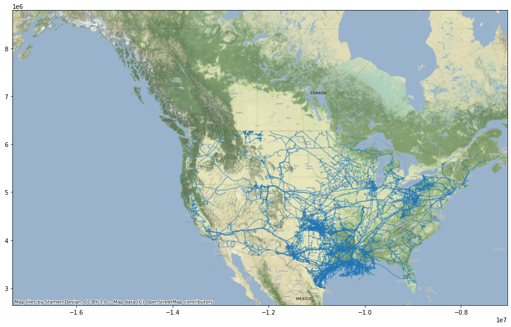
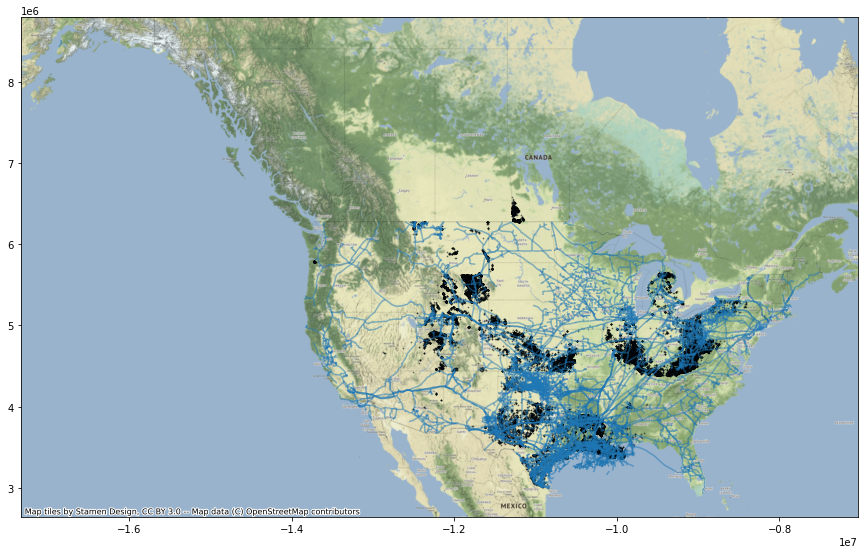

Potential Carbon Storage Wells Near Pipelines
Import and Procedural Functions
import pandas as pd
import matplotlib.pyplot as plt
import geopandas as gpd
import folium
import contextily as cx
import rtree
from zlib import crc32
import hashlib
from shapely.geometry import Point, LineString, Polygon
import numpy as np
from scipy.spatial import cKDTree
from shapely.geometry import Point
from haversine import Unit
from geopy.distance import distance
Query Plan
Restrictions
- Must be near a pipeline terminal
Imports
- Pipeline Data
- Well Data
Filtering
-
For each well calculate nearest pipeline
-
For each well calculate geographic distance from pipeline
-
eliminate wells further than 2 km from a pipeline
Data Frame Import
Wells Dataframe
## Importing our DataFrames
gisfilepath = "/Users/jnapolitano/Projects/data/energy/non-active-wells.geojson"
wells_df = gpd.read_file(gisfilepath)
wells_df = wells_df.to_crs(epsg=3857)
wells_df.columns
Index(['index', 'OBJECTID', 'ID', 'NAME', 'STATE', 'TYPE', 'STATUS', 'COUNTY',
'COUNTYFIPS', 'COUNTRY', 'LATITUDE', 'LONGITUDE', 'NAICS_CODE',
'NAICS_DESC', 'SOURCE', 'SOURCEDATE', 'VAL_METHOD', 'VAL_DATE',
'WEBSITE', 'WELLIDNO', 'API', 'PERMITNO', 'OPERATOR', 'OPERATORID',
'PRODTYPE', 'COORDTYPE', 'SURF_LAT', 'SURF_LONG', 'BOT_LAT', 'BOT_LONG',
'POSREL', 'FIELD', 'COMPDATE', 'TOTDEPTH', 'STAUTS_CAT', 'geometry'],
dtype='object')
Pipeline DataFrame
## Importing Pipeline Dataframe
gisfilepath = "/Users/jnapolitano/Projects/data/energy/Natural_Gas_Pipelines.geojson"
pipeline_df = gpd.read_file(gisfilepath)
pipeline_df = pipeline_df.to_crs(epsg=3857)
Removing Gathering Pipes from the Data
pipeline_df.drop(pipeline_df[pipeline_df['TYPEPIPE'] == 'Gathering'].index, inplace = True)
Adding PipeGeometry Column
pipeline_df['PipeGeometry'] = pipeline_df['geometry'].copy()
pipeline_df.columns
Index(['FID', 'TYPEPIPE', 'Operator', 'Shape_Leng', 'Shape__Length',
'geometry', 'PipeGeometry'],
dtype='object')
Joining Well and Pipeline Data
nearest_wells_df= wells_df.sjoin_nearest(pipeline_df, how = 'left', distance_col="distance_euclidian")
nearest_wells_df.columns
Index(['index', 'OBJECTID', 'ID', 'NAME', 'STATE', 'TYPE', 'STATUS', 'COUNTY',
'COUNTYFIPS', 'COUNTRY', 'LATITUDE', 'LONGITUDE', 'NAICS_CODE',
'NAICS_DESC', 'SOURCE', 'SOURCEDATE', 'VAL_METHOD', 'VAL_DATE',
'WEBSITE', 'WELLIDNO', 'API', 'PERMITNO', 'OPERATOR', 'OPERATORID',
'PRODTYPE', 'COORDTYPE', 'SURF_LAT', 'SURF_LONG', 'BOT_LAT', 'BOT_LONG',
'POSREL', 'FIELD', 'COMPDATE', 'TOTDEPTH', 'STAUTS_CAT', 'geometry',
'index_right', 'FID', 'TYPEPIPE', 'Operator', 'Shape_Leng',
'Shape__Length', 'PipeGeometry', 'distance_euclidian'],
dtype='object')
nearest_wells_df
.dataframe tbody tr th {
vertical-align: top;
}
.dataframe thead th {
text-align: right;
}
Adding a Distance Km Column
nearest_wells_df['distance_km'] = nearest_wells_df.distance_euclidian.apply(lambda x: x / 1000)
filtered_wells = nearest_wells_df.loc[nearest_wells_df['distance_km'] < 2].copy()
filtered_wells.describe()
.dataframe tbody tr th {
vertical-align: top;
}
.dataframe thead th {
text-align: right;
}
Wells Base Map
well_map_ax = filtered_wells.plot(figsize=(15, 15), alpha=0.5, edgecolor='k', markersize = .5)
cx.add_basemap(well_map_ax, zoom=6)
#filtered_wells.plot()

Pipelines Base Map
pipeline_map = pipeline_df.plot(figsize = (15,15), alpha=0.5,)
cx.add_basemap(pipeline_map, zoom=6)

Pipeline and Potential Carbon Storage Well Map
combined_map = wells_df.plot(ax = pipeline_map, alpha=0.5, figsize = (20,20), edgecolor='k', markersize = .5)
#cx.add_basemap(well_map, zoom=6)
#plt.show()
<Figure size 432x288 with 0 Axes>
combined_map.figure
